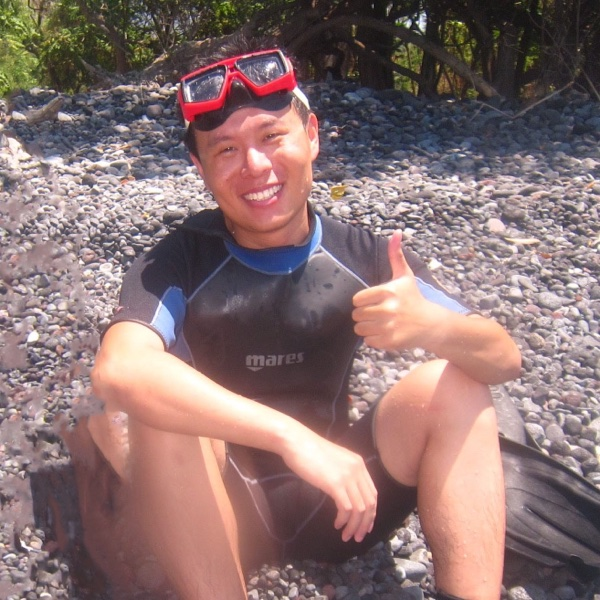

Honglin Li (李洪林)
Postdoctoral Fellow Electrical and Computer Engineering Kansas State University
I am an energy systems researcher and a Postdoctoral Fellow in the Department of Electrical and Computer Engineering at Kansas State University. I build optimization and techno-economic models that show which low-carbon technology mixes deliver reliable, affordable energy, and who pays for them. My doctoral research asked when flexibility, from hydrogen or from demand, adds value to a low-carbon energy system, at the scale of a plant, a state and the U.S. nuclear fleet. My current research asks how large new electricity loads such as AI data centers can be supplied with firm, low-carbon power, including small modular reactors.
My methods include linear, mixed-integer, nonlinear, stochastic and multi-objective optimization, combined with life cycle cost and carbon footprint analysis, simulation and reliability modeling. Applications span wind, solar and hydrogen systems, regional hydrogen networks, nuclear–hydrogen integration, small modular reactors for data centers, grid integration of data centers, and energy storage. My first-author papers appear in Nature Communications, Cell Reports Sustainability and the International Journal of Hydrogen Energy, with one accepted in Energy Conversion and Management.
Interests
Education
- Ph.D. in Mechanical Engineering, 2025The University of Texas at Dallas
- M.S. in Engineering (Industrial Engineering), 2021Texas State University
- M.E. in Computer Engineering, 2018Dalian Maritime University

Currently
- Postdoctoral Fellow, Kansas State University
- Researching firm, low-carbon power for AI data centers
- Teaching ECE 685 Power Systems Design, Fall 2026
What I bring
Each card links to the work that shows it.
-
Independent thinking
I look for the interaction that a simpler analysis misses, and explain the mechanism behind results that run against intuition.
-
Research across scales
One research question followed from a single wind farm to a state grid and the U.S. nuclear fleet, and its answer led to data-center campuses; each step changed who decides and which uncertainty matters.
-
Solving applied problems
I turn design and investment questions into models built on public market data, hourly operation, policy and cost details, and I state where the answer holds.
-
Building usable tools
Open model frameworks with documented formulations, examples, tests and open-source solvers, so that others can check and reuse the methods.
-
Teaching and mentoring
Instructor of ECE 685 Power Systems Design; mentored student researchers; I teach students to state a model's assumptions before solving it.
-
Proposals and teamwork
Co-PI on an interdisciplinary seed proposal on secure power for Kansas data centers; helped prepare a funded NSF supplement for national-laboratory research.
News
| Nov 2026 | Paper on small modular reactor cogeneration for hyperscale data-center IT and cooling loads accepted in Energy Conversion and Management. |
|---|---|
| Fall 2026 | Teaching ECE 685 Power Systems Design at Kansas State University. |
| Aug 2026 | Preprint on small modular reactor cogeneration for hyperscale data-center IT and cooling loads posted on arXiv. |
| 2026 | Two papers accepted at the IEEE North American Power Symposium (NAPS 2026), including the cost of delayed energization for AI data centers. |
| 2026 | Our paper on hydrogen integration and policy support for U.S. nuclear power plants is published in Nature Communications. |
| 2026 | Perspective on small modular reactors for data centers published in Cell Reports Sustainability. |
| Apr 2026 | Joined the Department of Electrical and Computer Engineering at Kansas State University as a Postdoctoral Fellow. |
| 2025 | Completed my Ph.D. in Mechanical Engineering at The University of Texas at Dallas. |
| 2025 | Paper on emission-intensity-informed load regulation published in Cell Reports Sustainability and featured by UT Dallas News. |
Latest from Field Notes
All Field NotesSelected publications
All publications-
Nat. Commun.Rethinking the economics and flexibility of U.S. nuclear power through hydrogen integration and policy supportNature Communications, vol. 17, article 7090, 2026.
@article{Li2026, author = {Li, Honglin and Huang, Jianqiao and Poudel, Bikash and Sun, Mucun and Westover, Tyler and Wendt, Daniel and Zhang, Jie}, title = {Rethinking the economics and flexibility of {U.S.} nuclear power through hydrogen integration and policy support}, journal = {Nature Communications}, volume = {17}, pages = {7090}, year = {2026}, issn = {2041-1723}, doi = {10.1038/s41467-026-73630-y} } -
Energy Convers. Manag.Techno-Economic Boundary Analysis of Small Modular Reactor Cogeneration for Hyperscale Data Center IT and Cooling LoadsEnergy Conversion and Management, 2026. Accepted
@article{li2026smrcogeneration, author = {Li, Honglin and She, Buxin and Zhang, Jie}, title = {{Techno-Economic Boundary Analysis of Small Modular Reactor Cogeneration for Hyperscale Data Center IT and Cooling Loads}}, journal = {Energy Conversion and Management}, year = {2026}, eprint = {2608.10999}, archivePrefix = {arXiv}, primaryClass = {eess.SY}, note = {Accepted} } -
Cell Rep. Sustain.The role of small modular reactors in powering data centers for a sustainable digital economyCell Reports Sustainability, vol. 3, article 100820, 2026. Co-first authors
@article{jacob2026role, title = {The role of small modular reactors in powering data centers for a sustainable digital economy}, author = {Jacob, Roshni Anna and Li, Honglin and Rad, Ali Mahboub and Poudel, Bikash and Li, Yaoyu and Sun, Mucun and McJunkin, Timothy R and Zhang, Jie}, journal = {Cell Reports Sustainability}, volume = {3}, pages = {100820}, year = {2026}, publisher = {Elsevier}, note = {Co-first authors}, doi = {10.1016/j.crsus.2026.100820} } -
Cell Rep. Sustain.Real-time greenhouse gas emission intensity informed demand-side load regulation for power grid decarbonizationCell Reports Sustainability, vol. 2, article 100367, 2025.
@article{li2025ghg, title = {Real-time greenhouse gas emission intensity informed demand-side load regulation for power grid decarbonization}, author = {Li, Honglin and Shen, Gulai and Senemmar, Soroush and Mehmani, Ali and Zhang, Jie}, year = {2025}, journal = {Cell Reports Sustainability}, volume = {2}, pages = {100367}, publisher = {Cell Press}, doi = {10.1016/j.crsus.2025.100367} } -
Int. J. Hydrogen EnergyHydrogen’s role in expanding renewable energy and reducing carbon emissions in TexasInternational Journal of Hydrogen Energy, vol. 113, pp. 77–89, 2025.
@article{li2025hydrogen, title = {Hydrogen’s role in expanding renewable energy and reducing carbon emissions in Texas}, author = {Li, Honglin and Zhang, Jie}, journal = {International Journal of Hydrogen Energy}, volume = {113}, pages = {77--89}, year = {2025}, publisher = {Elsevier}, doi = {10.1016/j.ijhydene.2025.02.303} }
Open-source model frameworks
SoftwareDocumented model frameworks associated with published and accepted research: formulations, data pipelines and runnable implementations with examples and tests.
- Hydrogen systems nuclear-hydrogen-integration Nuclear plants with electrolysis, storage and ancillary services: hourly operation and lifecycle economics. GitHub
- Hydrogen systems txh2-ercot-hydrogen Two-stage stochastic planning of electrolyzers, hydrogen storage and fuel cells with inter-zonal hydrogen transport. GitHub
- Carbon-aware grid ghg-load-regulation Demand-side load regulation guided by real-time emission intensity. GitHub
- Microgrids & supply chains supply-chain-microgrid-models Supply-chain facility location with on-site microgrids; virtual power plant scheduling. GitHub
- Wind uncertainty wind-uq-surrogate Uncertainty metrics and surrogate models for plant-level wind power uncertainty. GitHub
- Wind uncertainty mfgpr-wind-power-curve Multi-fidelity Gaussian process regression for probabilistic wind power curves. GitHub
- Hydrogen systems reopt-hydrogen-framework Sizing and dispatch of wind, solar, storage, electrolyzers, hydrogen tanks and fuel cells (REopt-type MILP). GitHub
- Nuclear & data centers smr-datacenter-cogeneration Small modular reactor power and steam-driven cooling for a data center: hourly co-optimization with the grid. GitHub
- Nuclear & data centers code-delayed-energization Cost of delayed energization for AI data centers: developer, ratepayer and social accounts. GitHub
Collaborations around the world
Institutions represented in my co-authored research (published, accepted or under review), and places where I have presented.
10 institutions3 countries5 presentation cities
- Home institutions
- Collaborating institutions
- Presentations
Click the map to zoom with the scroll wheel. Tab moves through the markers; Enter opens one.
United States
- The University of Texas at Dallas Home
- Kansas State University Home
- Texas State University Home
- Idaho National Laboratory
- Harvard University
- Nantum AI
- National Laboratory of the Rockies (formerly NREL)
- The University of Texas at San Antonio
Finland
- VTT Technical Research Centre of Finland
United Kingdom
- University of Strathclyde
Presentations
- TORQUE 2022
- ASME IDETC-CIE 2023
- NAWEA/WindTech 2023
- NAWEA/WindTech 2024
- IEEE NAPS 2026
Visitors
Where recent visitors to this site came from, approximately (from MapMyVisitors).